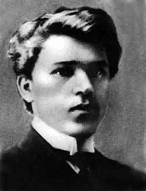

Михайло ДРАЙ-ХМАРА
Драй-Хмара Михайло Опанасович народився 10 жовтня 1889 року в селі Малі Канівці на Золотонощині (нині — Чорнобаївський район Черкаської області) в козацькій родині. Він рано залишився без матері. Батько зміг дати синові добру освіту. Спершу Михайло закінчив Золотоніську школу, а згодом — Черкаську гімназію. 1906 року за конкурсом вступив до знаменитої Колегії Павла Ґалаґана в Києві, де вчився разом із П.Филиповичем. 1910 року став студентом історично-філологічного факультету Київського університету, після закінчення якого (1915) був залишений на кафедрі слов'янознавства для підготовки до професорського звання. 1913 року відряджений за кордон, де студіював фонди бібліотек та архівів Львова, Будапешта, Загреба, Белграда і Бухареста. З початком першої світової війни як професорський стипендіат працював у Петроградському університеті, а 1917 року повернувся в Україну. В 1918-23 р.р. — професор Кам'янець-Подільського університету. З 1923 по 1929 рік — професор кафедри українознавства Київського медичного інституту, а в 1930-33 роках працював у Науково-дослідному інституті мовознавства при ВУАН.
Михайло Драй-Хмара належав до угруповання "неокласиків", хоча до кінця не позбувся символістичних впливів. Його поетичній палітрі притаманні вкрай загострені ліричні емоції, його соковито-язичницька лексика наповнена неологізмами. До класичних форм сонета, яким віддавали перевагу "неокласики", він звертається тільки наприкінці 20-х років. За життя Драй-Хмари вийшла друком лише одна книга поезій "Проростень" (1926). Дві інші ("Сонячні марші" та "Залізний обрій") так і не побачили світу аж до 1969 року. Як літературознавець, глибоко обізнаний із багатьма слов'янськими літературами, Драй-Хмара своїми розвідками добре прислужився розвиткові історико-порівняльного методу. Щоправда, йому вдалося видати лише монографію "Леся Українка" (1926). Вперше Київським відділом ДПУ (за звинуваченням в приналежності до контрреволюційної організації в Кам'янець-Подільському університеті) Михайла Драй-Хмару заарештовано 21 березня 1933 року. Однак тодішньому слідству забракло доказів, і невдовзі, 11 травня, його випустили із-за ґрат. Та тільки 16 липня 1934 року його справу, за № 3391 було припинено, і професор Драй-Хмара, нарешті, був звільнений від підписки про невиїзд. Одначе повторного арешту лишилося чекати недовго. 5 вересня 1935 року було виписано ордер № 28 на арешт колишнього професора, а тоді рядового викладача української мови. Наступного дня оперуповноважені Сергієвський і Бондаренко арештували Драй-Хмару в його помешканні. Звинувачення стандартне: націоналістична контрреволюційна діяльність. Драй-Хмара вперто заперечував це. Тоді його справу під № 101 ЗО жовтня 1935 року з'єднали зі справою П. Филиповича під № 99, а 22 листопада справи П. Филиповича і М. Драй-Хмари були "підверстані" до справи № 1377 "Зерова і групи". Проте й тут М. Драй-Хмара вперто заперечував свою приналежність до міфічної контрреволюційної організації, і слідчі змушені були знову повернутися до справи № 101. Вона розглядалася 28 березня 1936 року в Москві на засіданні Особливої наради при НКВС СРСР під порядковим номером 88. Вирок лаконічний: "Драй-Хмара Михаил Афанасьевич — за к.-р. деятельность заключить в исправтрудлагерь сроком на пять лет, считая с 5.9.35 г." Так Драй-Хмара опинився на Колимі. Тут постановою трійки УНКВС по Дальбуду від 27 травня 1938 року йому додають ще десять років за нібито участь в антирадянській організації і антирадянську пропаганду вже в таборі. Як засвідчено в документах про реабілітацію, М. Драй-Хмара помер 19 січня 1939 року "від ослаблення серцевої діяльності". Реабілітовано письменника після перевірки табірної справи в Магаданській області 28 листопадда 1989 року. Існує ще одна версія смерті Михайла Драй-Хмари. За спогадами П.Василевського (див. його. статтю "Так він загинув на Колимі" в "Літературній Україні" від 2 жовтня 1989 р.) письменник у квітні 1939 року став на місце смертника під час одного з чергових розстрілів кожного п'ятого в шерензі, врятувавши цим невідому молоду людину... Вячеслав Брюховецький ЛУ 25.07.1991